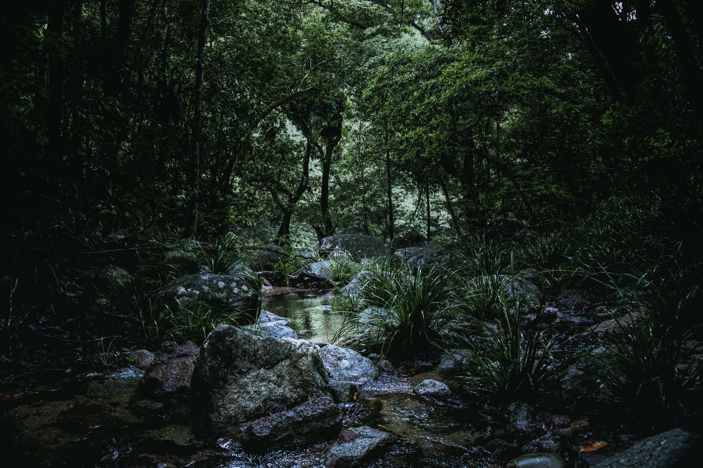
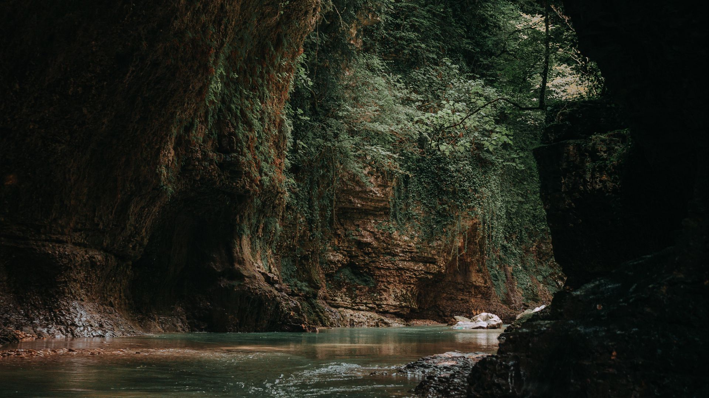
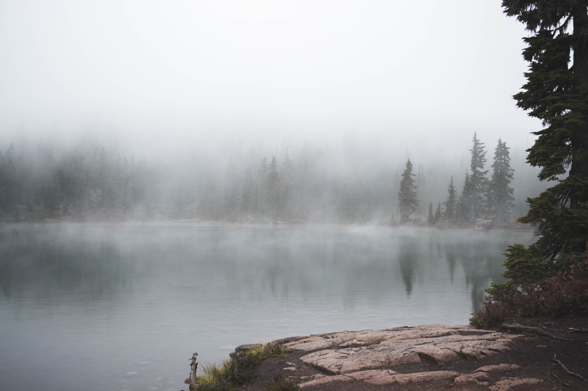
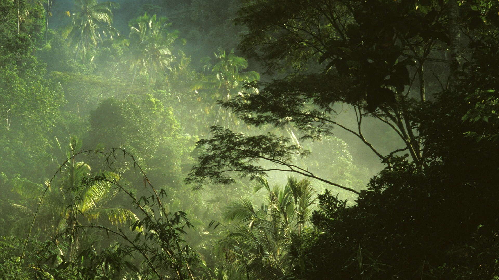
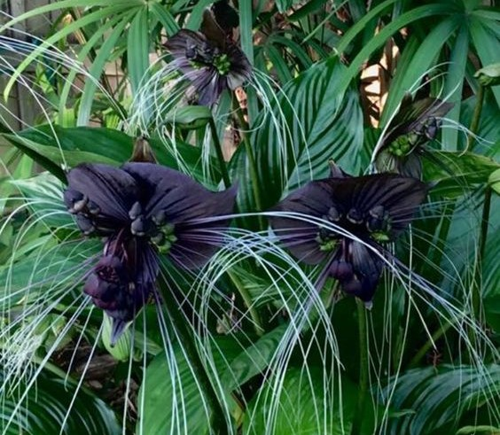

Silverfall
SilverfallPlants and Flowers
The Crystal Caverns of Shadow
The Whispering Mist Lake
 The Forsaken Fortress
The Forsaken FortressTwilight Grove

Загадочное и волшебное место, наполненное древними деревьями и извилистыми тропами. Это большая естественная коллекция деревьев, состоящая из нескольких видов деревьев, которая существует как единая экосистема. Дом для бесчисленного множества видов растений и животных, создавая сложную сеть жизни. Это убежищем для биоразнообразия и резервуаром генетического разнообразия, защищая целостность глобального генофонда. Лес был здесь с начала времен, местом, где бродили и правили боги. Легенды гласят, что лесные деревья видели создание мира, росли из земли и достигали неба, когда формировалось человечество. Во времена радости они осыпали землю цветами и плодами, а во времена печали их ветви тряслись и сбрасывали листья. Шло время, люди приходили и уходили, а лес оставался, его чудеса никогда не исчезали, а тайны так и не были раскрыты полностью. Некоторые говорят, что до сих пор можно услышать, как лес шепчет истории человечества. По мере того, как приходили и уходили поколения, лес приобретал разные значения и обрастал историями. Он стал убежищем, покоем, местом где можно было избежать шума и суеты мира. Некоторые отправлялись глубоко в его темные глубины в поисках мудрости и просветления, в то время как другие выбирали менее известные пути и открывали хранящиеся в нем тайны. Со временем лес стал местом красоты и исцеления, куда приходили, чтобы насладиться умиротворенной обстановкой и соединиться с миром природы.
Vantablackia Belladonnaia

Этот уникальный цветок представляет собой редкое и красивое зрелище с его угольно-черными лепестками и странной, почти потусторонней формой. Его цвет контрастирует с пышной зеленью окрестностей, напоминая о более темном и скрытном мире. Веток хранит в себе мистическую силу и опасную тайну, которую необходимо охранять. В любом случае, оно обязательно привлечет внимание и любопытство тех, кто его увидит. Его красота настолько заманчива, что невозможно удержаться и не сорвать его. Название подразумевает, что цветок красив, но опасен, Загадочный цветок раскрывается только ночью.